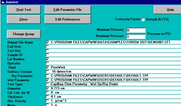
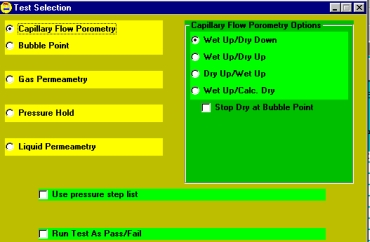
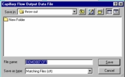

Select the Group menu option.
Select the Group menu option.Choose Select Group to use an existing group.
Choose New Group to create a new group.
For more information on Groups, see the section on using groups, Example: Using Groups.

From the CAPWIN Main Screen, select the Auto Test option from the Execute menu.
The Autotest screen appears specific to the type of test being run.
Select Type of Test. If the test shown is incorrect, click on the Type of Test box.

The Test Selection screen appears. Select Capillary Flow Porometry from the yellow list. Select the desired mode from the green list. Dry-up/wet-up is the most commonly used and usually the most reliable of the five modes.
For a more detailed discussion of the modes please refer to the section onCapillary Flow Porometry Options.
For a more detailed discussion of the modes please refer to the section onCapillary Flow Porometry Options.

Click OK. The Autotest screen appears.
Select Output File Name.
If the file shown is incorrect or to create a new file, double-click on Output File Name.

If the file shown is incorrect or to create a new file, double-click on Output File Name.
The Output Data File selector window appears.
To select an existing file, click on the folder containing the file. Select the file in the file list.To create a new file, select or create a folder. Type a name for the file in the text box. Click OK.
To select an existing file, click on the folder containing the file. Select the file in the file list.To create a new file, select or create a folder. Type a name for the file in the text box. Click OK.
You are returned to the Autotest screen.
End User, Test Reference, Sample ID, Lot_Number, Operator and Fluid are all optional and may be left blank if so desired. These items are printed on the reports for information and identification purposes. (Although it is up to the user, it is recommended that the Fluid box not be left blank.)
 The Surface Tension of the wetting fluid is used by the CAPWIN system to perform calculations. Be sure the surface tension displayed is correct for the fluid you are using. It will not be correct if it has been previously changed because it is not automatically updated if the type of fluid used is changed. Thus the user must enter the correct value in dynes/cm.
The Surface Tension of the wetting fluid is used by the CAPWIN system to perform calculations. Be sure the surface tension displayed is correct for the fluid you are using. It will not be correct if it has been previously changed because it is not automatically updated if the type of fluid used is changed. Thus the user must enter the correct value in dynes/cm.
Dry Curve Testing Parameters File displays the name of the parameter file being used for dry curve phase of the test.
If you wish to select another file or create a new file, click on Dry Curve Testing Parameters File.
If you wish to select another file or create a new file, click on Dry Curve Testing Parameters File.

The DRY Parameter File selection screen appears. To select an existing file, click on the folder containing the file. Select the file in the file list Click OK. To create a new file, select the file in the file list to modify. Click OK.